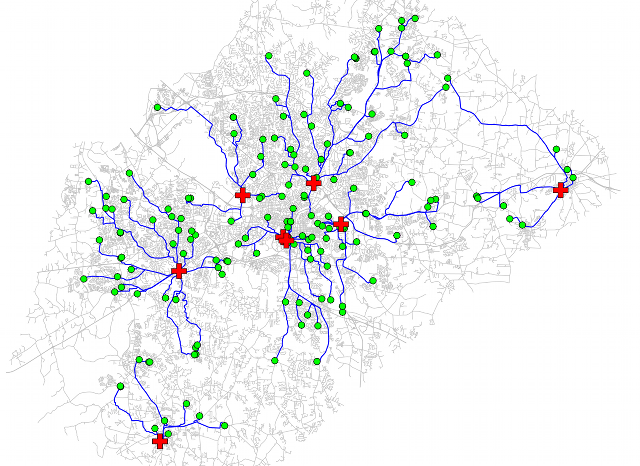

The costs of arcs in forward and backward direction are specified by afcolumn and abcolumn columns respectively. If abcolumn is not given, the same cost is used in both directions.
v.net.distance will not work if you are trying to find the nearest neighbors within a group of nodes, i.e. where to and from are the same set of nodes, as the closest node will be the node itself and the result will be zero-length paths. In order to find nearest neighbors within a group of nodes, you can either loop through each node as to and all other nodes as from or create a complete distance matrix with v.net.allpairs and select the lowest non-zero distance for each node.
Streets are grey lines, schools are green circles, hospitals are red crosses, shortest paths are blue lines:

# connect schools to streets as layer 2 v.net input=streets_wake points=schools_wake output=streets_net1 operation=connect thresh=400 alayer=1 nlayer=2 # connect hospitals to streets as layer 3 v.net input=streets_net1 points=hospitals output=streets_net2 operation=connect thresh=400 alayer=1 nlayer=3 # inspect the result v.category in=streets_net2 op=report # shortest paths from schools (points in layer 2) to nearest hospitals (points in layer 3) v.net.distance in=streets_net2 out=schools_to_hospitals flayer=2 tlayer=3
Last changed: $Date$